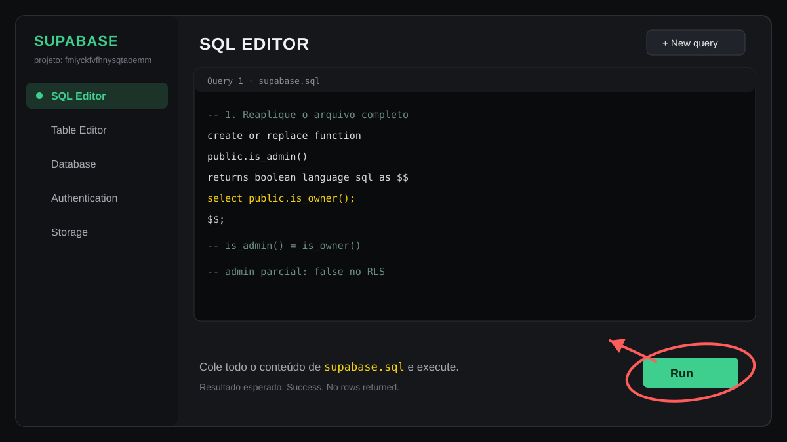
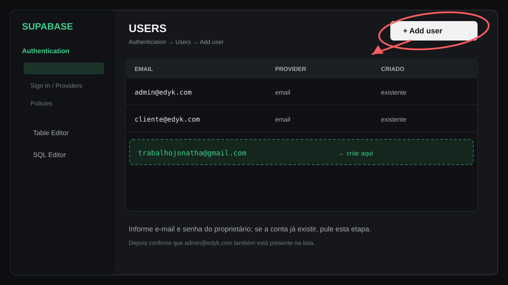
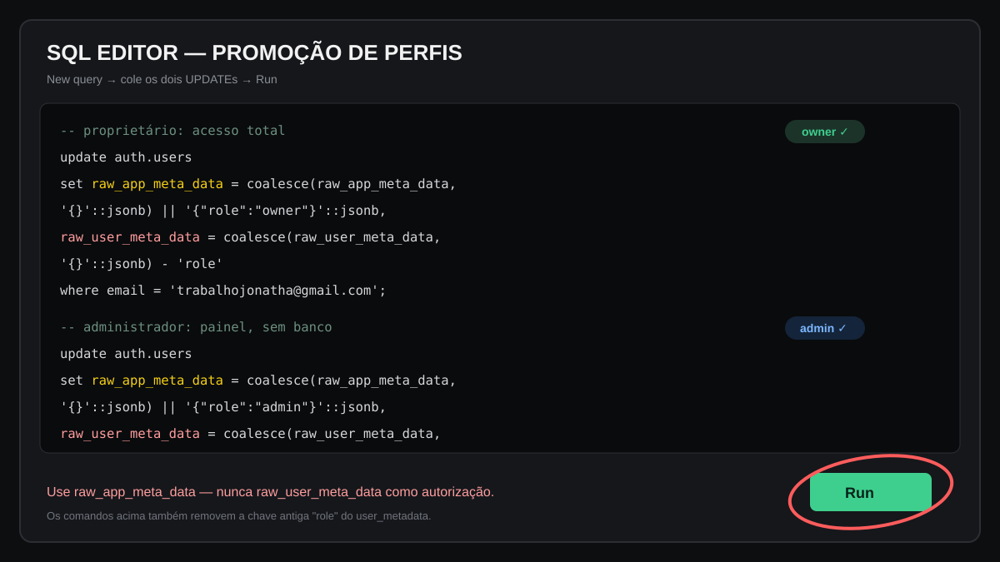
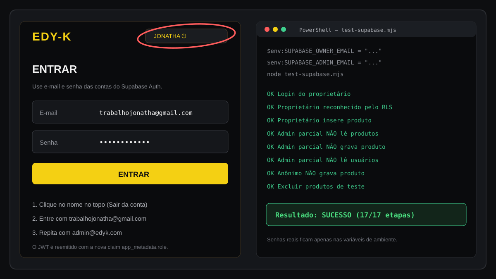

EDY-K Barbershop · 5 etapas · ilustrações didáticas (não são capturas reais do seu painel)
Abra o Supabase Dashboard do projeto fmiyckfvfhnysqtaoemm → SQL Editor → New query. Cole o conteúdo completo de supabase.sql e clique em Run.

Ilustração: cole o arquivo inteiro no editor e execute.
public.users. Se houver dados importantes nela, exporte antes. O resultado esperado é Success. No rows returned.Isso atualiza is_admin() para sinônimo de is_owner() e faz o administrador parcial ser negado até na leitura de users e products.
Vá em Authentication → Users → Add user. Informe trabalhojonatha@gmail.com e uma senha forte, depois clique em Create user. Se a conta já existir, pule esta etapa. Confirme também que admin@edyk.com existe.

Ilustração: botão de adicionar usuário em Authentication.
Não marque “Auto confirm user” por padrão em produção; use apenas se quiser que o e-mail já esteja confirmado para testes.
Ainda no SQL Editor, clique em New query e execute:
-- Proprietário: acesso total
update auth.users
set raw_app_meta_data = coalesce(raw_app_meta_data, '{}'::jsonb) || '{"role":"owner"}'::jsonb,
raw_user_meta_data = coalesce(raw_user_meta_data, '{}'::jsonb) - 'role'
where email = 'trabalhojonatha@gmail.com';
-- Administrador parcial: painel local, sem banco
update auth.users
set raw_app_meta_data = coalesce(raw_app_meta_data, '{}'::jsonb) || '{"role":"admin"}'::jsonb,
raw_user_meta_data = coalesce(raw_user_meta_data, '{}'::jsonb) - 'role'
where email = 'admin@edyk.com';
Ilustração: os dois UPDATEs e o botão Run.
raw_app_meta_data, nunca raw_user_meta_data. O user_metadata pode ser enviado por qualquer visitante no cadastro; usá-lo como autorização permitiria escalonamento. Os comandos acima também removem a chave antiga role do user_metadata.No topo direito do site, clique no botão com o primeiro nome do usuário e o ícone de saída (ex.: JONATHA ⏻, título “Sair da conta”). Isso encerra a sessão e força o Supabase a reemitir o JWT com a nova claim app_metadata.role.

Ilustração: logout/login no app e o teste no terminal.
Com o Supabase configurado, os botões de acesso rápido (“Entrar como proprietário”) desaparecem — use o formulário de e-mail e senha. No modo demo offline eles continuam disponíveis.
No PowerShell, na pasta do projeto:
$env:SUPABASE_OWNER_EMAIL = "trabalhojonatha@gmail.com"
$env:SUPABASE_OWNER_PASSWORD = "SUA_SENHA"
$env:SUPABASE_ADMIN_EMAIL = "admin@edyk.com"
$env:SUPABASE_ADMIN_PASSWORD = "SUA_SENHA"
node test-supabase.mjsusers/products, anônimo sem escrita./rest/v1/* (confirme na aba Rede do navegador).select public.current_role(), public.is_owner(), public.is_admin(); — owner retorna owner / true / true e admin retorna admin / false / false.Se o admin perdeu o acesso após o passo 1, é sinal de que a promoção antiga estava em user_metadata: basta reaplicar o passo 3 e fazer logout/login.